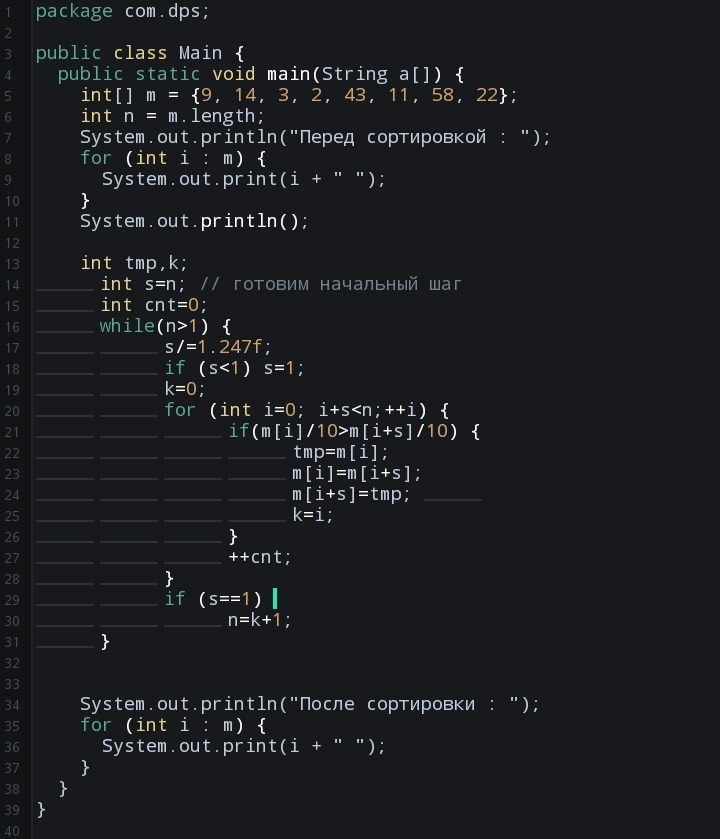

Рассческа Производятся неоднократные прогоны по массиву, при которых сравниваются пары элементов. Если они неотсортированы друг относительно друга - то производится обмен. В результате крупные элементы мигрируют в конец массива, а небольшие по значению - в начало.
В пузырьковой сортировке при каждом прогоне по массиву сравниваются соседние элементы. Здесь же сравниваются элементы, между которыми некоторое фиксированное расстояние. При каждом следующем прохождении расстояние уменьшается, пока не достигнет минимальной величины.
Уменьшающееся расстояние между сравниваемыми элементами рассчитывается с помощью специальной величины, называемой фактором уменьшения. Длина массива делится на этот фактор, это и есть разрыв между индексами. После каждого прохода расстояние делится на фактор уменьшения и таким образом получается новое значение. В конце концов оно сужается до минимального значения - единицы, и массив просто досортировывается обычным "пузырьком".
Реализация на Java :
Выберите, какой алгоритм вы хотите изучить:
Сортировка пузырьком